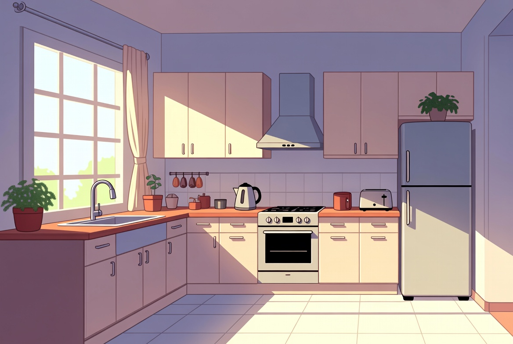

Wann stehst du auf?
Quando você se levanta?
Nesta aula você vai aprender a descrever ações do dia a dia.
 Lektion 8
Lektion 8Ouça a conversa completa e acompanhe a tradução em português.



Aprenda cada expressão como um bloco completo.
Quando você se levanta?
Eu me levanto às sete.
O que você faz depois?
Depois tomo café e vou trabalhar.
Quando você volta para casa?
Por volta das seis.
Ich stehe um sieben Uhr auf traz seu primeiro verbo separável: aufstehen, levantar-se. Na frase, o prefixo auf se solta e vai para o final: ich stehe ... auf.
Ich stehe um sieben Uhr auf traz seu primeiro verbo separável: aufstehen, levantar-se. Na frase, o prefixo auf se solta e vai para o final: ich stehe ... auf.
O alemão fica visível; a explicação ajuda você a entender como usar.
mostra uma regra de ouro do alemão: o verbo fica sempre na segunda posição. Como a frase começa com
quer dizer 'volto para casa'. Atenção: para o movimento em direção a casa é
Alguém pergunta a que horas você se levanta. Responda em voz alta com
Fixe a regra principal de hoje: verbos separáveis introdutórios e posição do verbo.
Escolha a tradução correta e confira na hora.